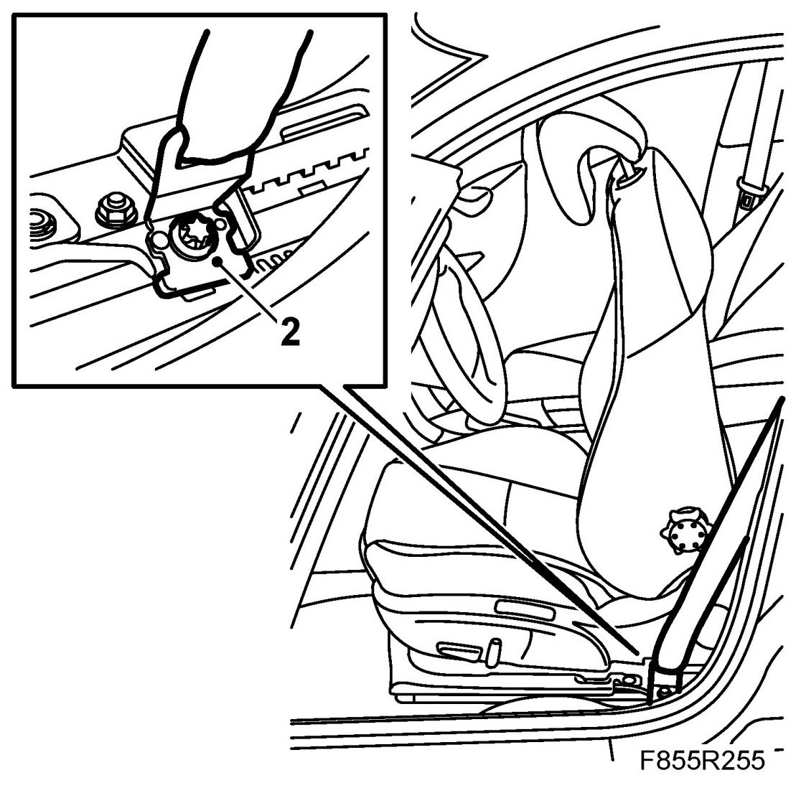
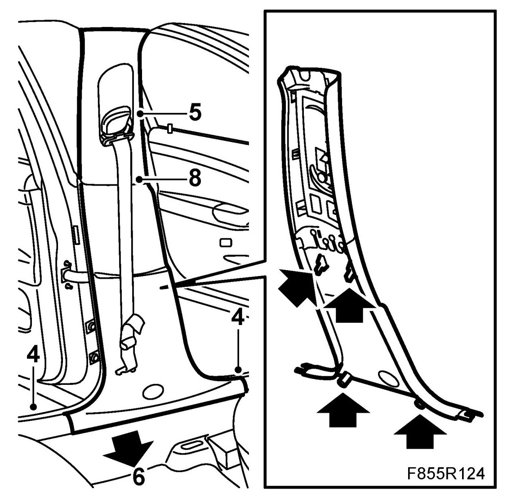
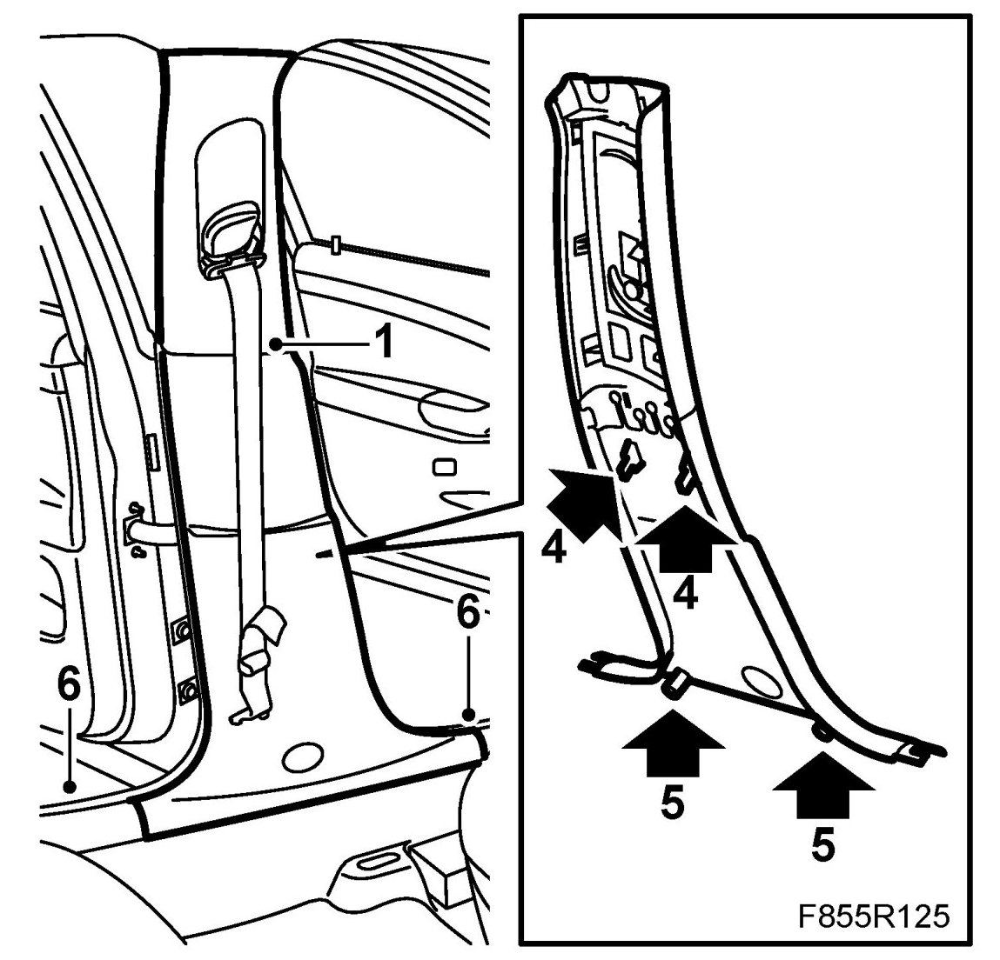
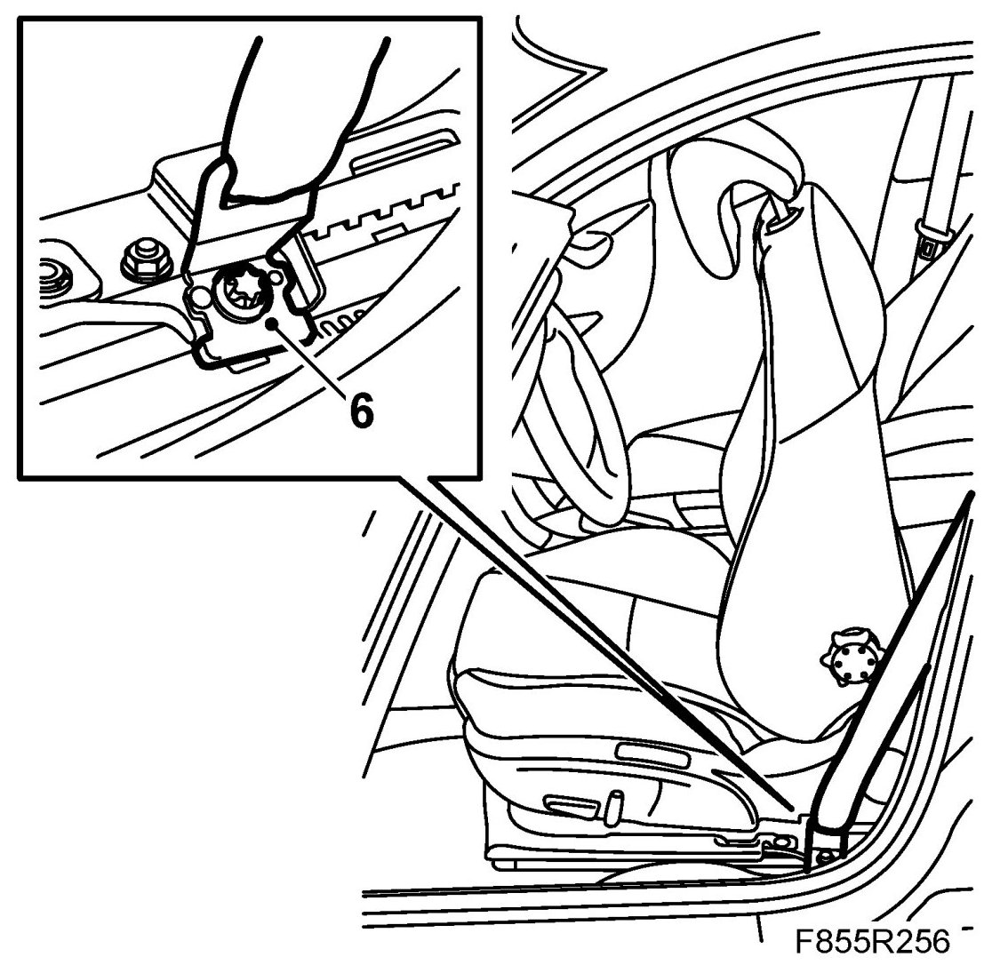

B-Pillar Trim
B-pillar Trim
To remove
1. Move the seat all the way forward and tip the backrest forward.
Cars with PPS: Remove the cover on the belt force sensor. Unplug the belt force sensor connector.
2. Remove the cover and seatbelt mounting from the seat.

3. Remove the rear seat by lifting it at the front. Take out the rear seat.
4. Remove the front and rear scuff plates. Lift up the bottom of the rear seat backrest bolster in order to remove the rear scuff plate.

5. Adjust the height of the seat belt to its lowest position.
6. Remove the B-pillar trim from below pulling out.
7. Move the B-pillar trim downwards.
8. Extract the belt from the seat belt guide.
To fit
1. Insert the belt through the seat belt guide and the B-pillar trim.

2. Move up the top part of the B-pillar trim so it rests against the locks in the headlining.
3. Aim the height adjustment in the trim to the height adjustment on the B-pillar.
4. Press home the middle clips on the trim against the B-pillar. Take care to make sure the clips are located correctly in the grooves.
5. Press home the B-pillar trim at the bottom in the clips on the B-pillar. Take care to make sure the rubber strip along the doorframe does not get pinched.
6. Fit the seatbelt mounting and cover to the seat.
Tightening torque 30 Nm (22 lbf ft)
Cars with PPS: Plug in the belt force sensor connector. Fit the cover.

7. Fit the front scuff plate, 4 clips. Fit the rear scuff plate by moving the rear part behind the bolster. Then fasten the bolster with the clasp in the mounting. Take care to make sure the rubber strip on the scuff plates does not get pinched.
8. Fit the rear seat.